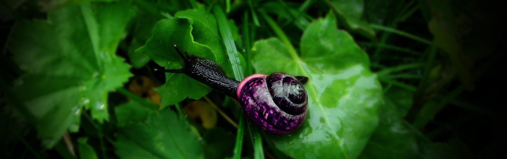

Tyrian Purple
The Snail That Dressed Emperors
Origin
Tyrian Purple was produced in the ancient Mediterranean world, primarily from the eastern coast of the Mediterranean—the cities of Tyre and Sidon in modern Lebanon—and from Tel Shiqmona on the coast of Israel and Aegina in Greece. The pigment came from murex sea snails—specifically Murex trunculus and related species. The earliest chemically verified instance comes from 13th-century BCE archaeological contexts at Sarepta (Sarafand), between Tyre and Sidon, where piles of utilized Murex shells were found near pottery kilns and workshops.
Why This Region?
The Mediterranean coast offered abundant murex populations and the harbor infrastructure needed for large-scale dye production. The cities of Tyre and Sidon became synonymous with the dye—its name, "Tyrian Purple," comes from Tyre.
History
Tyrian Purple was more precious than gold. The Roman historian Cornelius Nepos recorded that in the early days of Augustus, double-dyed Tyrian purple sold for 1,000 denarii per pound—an impossible sum for all but the wealthiest. The dye was associated with royalty and power. In Rome, only emperors and certain high officials could wear it. Pliny described the "double-dyed" purple as a "lavish extravagance".
The color was 6,6'-dibromoindigotin (DBI)—a brominated indigo. The dye photodebrominates when exposed to light, converting to indigotin (blue). This chemical instability means ancient Tyrian purple textiles gradually shifted from purple to blue over time.Production declined as the Roman Empire fell, and the dye vanished from history for centuries. Modern attempts to recreate it have been limited and expensive.
How Was It Made?
Tyrian Purple production was labor-intensive and foul-smelling:
- Thousands of murex snails were collected.
- The hypobranchial gland—a small organ containing the dye precursor—was extracted.
- The glands were crushed and heated in vats.
- The dye developed through a chemical reaction—the color changing from yellow to green to purple as it oxidized.
- Fabric was dipped into the vat, absorbing the purple.
The chemical process involves enzymatic precursors that transform into DBI through oxidation. The photodebromination of DBI to indigotin explains the blue fading of ancient purple textiles
What Makes It Dangerous?
Tyrian Purple itself is not notably toxic to the wearer. The production process was hazardous for workers:
- The foul smell from rotting mollusks made the dye houses infamous.
- Workers handling large quantities of snails and glands faced repetitive strain injuries and skin irritation.
- The chemicals involved in processing (some recipes used urine or lye) posed additional risks.
The primary "toxicity" was economic and social—the dye's cost was toxic to any budget except an emperor's.
Artists Who Used Tyrian Purple
-
- Ancient Roman emperors
- Tyrian Purple was their exclusive color. Wearing it without imperial permission could be punishable by death.
-
- Pliny the Elder
- He documented its use and value in his Natural History, recording prices and production methods.
-
- Roman and Byzantine artists
- They used Tyrian Purple in textiles and manuscripts, though the dye's cost meant it was reserved for the most important works.
Famous Works Featuring Ultramarine:
-
- Roman imperial robes
- The dye's most famous use
-
- Byzantine imperial textiles
- Purple as a symbol of sacred authority
-
- Ancient religious garments
- Used in temple and synagogue textiles
-
- Royal and ecclesiastical vestments
- Continued use in medieval Europe